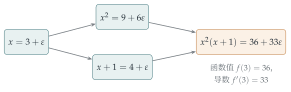

STEP II 1992，第 4 题
继续之前，请先阅读题目（原题为英文）。题目载于 STEP Support Programme 的题目资料库： step.maths.org/questions/92-s2-q4
引子
甚么是微分法（differentiation）？在中学，它是用极限（limit）\(\lim_{h \to 0}\frac{f(x+h) - f(x)}{h}\) 来定义的，然后你再学各种法则：和的导数（derivative）等于导数的和、积法则（product rule），诸如此类。这道题把整件事倒转过来。请把极限完全抛开。假设你对某个运算所知的，就只有它符合和法则、积法则和常数的法则，并且把 \(x\) 变成 \(1\)。题目要证明的是：这样的运算必定就是微分，至少对多项式（polynomial）而言是如此。
这是代数学家看微积分的角度：一个运算的特征在于它所遵从的法则，而不在于某条公式。遵从积法则的运算称为导子（derivation），它们在代数、几何和物理中随处可见。出人意料的是，训练现代机器学习系统的软件，内里用的也是同一个想法。
动笔之前
法则 (i) 就是积法则。积法则怎可能告诉你关于常数的任何事情？（试把常数看成一个乘积。）
数 \(1\) 等于 \(1 \times 1\)。把积法则应用于 \(1 \times 1\)，便得出 \(\lozenge 1\) 与它自身之间的一个关系，从而迫使它等于零。一般而言，处理这类公理（axiom）的窍门，是把它们应用于精心挑选的简单输入。
逐步解题
阶段 1 常数
取 \(\mathrm{f} = \mathrm{g} = 1\)，应用法则 (i)。然后用法则 (iv) 处理其他任何常数。
\(\lozenge 1 = \lozenge(1 \cdot 1) = 1 \cdot \lozenge 1 + 1 \cdot \lozenge 1 = 2\lozenge 1\)，所以 \(\lozenge 1 = 0\)。对任意常数 \(\lambda\)，由法则 (iv) 得 \(\lozenge\lambda = \lozenge(\lambda \cdot 1) = \lambda\lozenge 1 = 0\)。■
阶段 2 幂
利用法则 (iii)，\(\lozenge x^2 = \lozenge(x \cdot x) = x\lozenge x + x\lozenge x = 2x\)。于是 \[\lozenge x^3 = \lozenge(x^2 \cdot x) = x\lozenge x^2 + x^2\lozenge x = x \cdot 2x + x^2 = 3x^2.\]
用归纳法（induction）证明：对每个正整数 \(n\)，均有 \(\lozenge x^n = nx^{n-1}\)。
\(n = 1\) 的情况就是法则 (iii)。若 \(\lozenge x^n = nx^{n-1}\)，则 \[\lozenge x^{n+1} = \lozenge(x^n \cdot x) = x\lozenge x^n + x^n\lozenge x = x \cdot nx^{n-1} + x^n = (n + 1)x^n. \qed\]
阶段 3 所有多项式
一般的多项式是 \(\mathrm{h}(x) = a_0 + a_1x + \cdots + a_mx^m\)。由法则 (ii)（重复应用）和法则 (iv)， \[\begin{aligned} \lozenge\mathrm{h}(x) &= \lozenge a_0 + a_1\lozenge x + a_2\lozenge x^2 + \cdots + a_m\lozenge x^m \\ &= a_1 + 2a_2x + \cdots + ma_mx^{m-1} = \mathrm{h}'(x). \qed \end{aligned}\]
回顾
公理决定运算。四条法则，完全没有提及极限，就把 \(\lozenge\) 在多项式上的作用完全确定下来。
生成元（generator）。每个多项式都是由常数和 \(x\) 经加法和乘法构造出来的。只要知道 \(\lozenge\) 对这些基本构件的作用，以及它与这些构造运算如何互动，就能确定它在所有多项式上的作用。
沿着构造过程作归纳。证明的步骤紧随多项式的构造方式：先以重复相乘得出幂，然后再求和。
背后的数学
在一个代数系统上，若运算 \(D\) 具有可加性（additive），并且满足积法则 \(D(fg) = fD(g) + gD(f)\)，便称为导子。这道题说明，在多项式上，一个把常数变成零的导子完全由 \(D(x)\) 决定：事实上 \(D(h) = h'(x)\,D(x)\)，所以唯一的自由度就是多项式 \(D(x)\) 的选择。法则 (iii) 规定了 \(D(x) = 1\)。导子遍布数学各个领域：在几何中，曲面上的向量场（vector field）可以定义为该曲面上的函数的一个导子（它沿着向量场的方向对函数求导）；在代数中，一个结构的导子量度它的“无穷小对称”（infinitesimal symmetries）；在物理中，量子力学的交换子（commutator）\([A, B] = AB - BA\) 对每个变元而言都是一个导子。
没有极限的微积分
在极限完全没有意义的场合，代数式的导数依然行得通。在有限域（finite field）上，例如模质数 \(p\) 的算术，并没有极限可言，但多项式的形式导数（formal derivative）仍由同样的法则定义，而且仍然能够侦测重根（repeated root）：多项式 \(f\) 有重根，当且仅当 \(f\) 与 \(f'\) 有公因式。举例说，我们就是这样证明当 \(p \nmid n\) 时 \(x^n - 1\) 没有重根的；要在有限域上定义 第 6.1 节 的分圆多项式（cyclotomic polynomial），就需要这个事实。编码理论和密码学也用到同样的想法。
自动微分
以下是一个现代应用。创造一个数 \(\varepsilon\)，使得 \(\varepsilon^2 = 0\) 但 \(\varepsilon \neq 0\)，然后用对偶数（dual number）\(a + b\varepsilon\) 来做算术。这时 \((a + b\varepsilon)(c + d\varepsilon) = ac + (ad + bc)\varepsilon\)：\(\varepsilon\) 的部分恰好遵从积法则。因此对任何多项式， \[f(x + \varepsilon) = f(x) + f'(x)\,\varepsilon,\] 而在对偶数 \(x + \varepsilon\) 处计算 \(f\)，就能同时求出函数值和导数，结果完全准确，既不用极限，也没有因微小差值而产生的舍入误差（图 6.5.1）。这称为前向模式自动微分（forward-mode automatic differentiation）。它的近亲“反向模式”（reverse mode），就是用来训练拥有数十亿个参数的神经网络（neural network）的算法（反向传播，backpropagation）：这类系统每学习一次，都是在把积法则和链式法则（chain rule）当作导子，一步一步地应用。

思维技巧
用一个运算所遵从的法则来描述它，然后证明这些法则唯一地确定了它。
这就是公理化方法（axiomatic method），是大学代数的核心。它的威力在于：凡是由公理证明出来的结果，都适用于每一个满足这些公理的运算，不论那是多项式的微分、曲面上函数的微分，还是某种尚未发明的东西。
延伸练习
另一个导子。假设 \(\lozenge\) 满足法则 (i)、(ii) 和 (iv)，但 \(\lozenge x = x\) 而不是 \(1\)。证明 \(\lozenge\mathrm{h}(x) = x\,\mathrm{h}'(x)\)。\(\lozenge\) 会把 \(x^n\) 变成甚么？
商法则（quotient rule）。把 \(\lozenge\) 推广到有理函数（rational function）\(\mathrm{f}/\mathrm{g}\)，并假设法则 (i) 仍然成立。把法则 (i) 应用于 \(\mathrm{g} \cdot \frac{\mathrm{f}}{\mathrm{g}} = \mathrm{f}\)，从而推导出商法则。
重根。证明若 \((x - a)^2\) 整除多项式 \(\mathrm{f}\)，则 \(x - a\) 整除 \(\mathrm{f}'\)。利用这个结果证明 \(x^n - 1\) 没有重根。
对偶数。设 \(f(x) = (x^2 + 1)^3\)，用对偶数计算 \(f(2)\) 和 \(f'(2)\)，并用链式法则验算。
延伸阅读
Peter Cameron, Introduction to Algebra（Oxford University Press）。大学一年级程度的环、多项式和域，并包括形式导数。
Andreas Griewank & Andrea Walther, Evaluating Derivatives（SIAM）。自动微分的标准参考书。程度较深。
Michael Nielsen, Neural Networks and Deep Learning（网上免费阅读）。第 2 章清楚讲解反向传播。